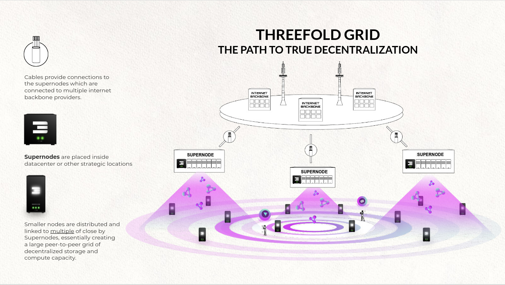

DEVxDAO GRANT Proposal #36
ThreeFold tech applied for grants with the DEVxDAO organisation, received approval, and contracts have been signed. There are two grants in total. This repo deals with the research and POC work with regards to grant #36. See also grant #37.
Efficient operations of a Layer-1 Node on a decentralized cloud
Layer-1 protocols face a major dilemma that is hard to solve: either run there nodes in hyperscale datacenters whic provide all the knowledge and capabilities to keep a cloud up and running but lead to a centralised install base of relay on IT Sacy community memmbers that can run the nodes on bare metal outside of the hyperscale cloud providers. The two options provide a solid foundation to run the layer-1 nodes on but lead to centralissation. For example AWS as a hypersacaler has made onboarding of ethereums nodes very simple and therefore a. high percentage of the etherum nodes live inside AWS datacenters (https://thenextweb.com/news/ethereum-nodes-cloud-services-amazon-web-services-blockchain-hosted-decentralization).
This is not what layer-1 protocols are about. They are predominantly about decentralising applications, services, transactions, storage and networking. To do this on a centralised platform as a way to do it, but we believe that there should eb a healthy balance between relying on hyperscalers, system administrators that can do it decentralised and than a third option which is "easy, one-click deployment method" for anyone that wants to contribute to the project on a decentralised and distributed grid of compute and storage capacity.
ThreeFold have been building such a grid of "data processing and storage" generators for the past decade and is currently in beta operational stage.
These data generators (3nodes) are autonomous and very safe and secure. 3nodes can exists everywhere where there is electricity and network connectivity. They do not provide access or interfaces for people, both physical and access over the network. Instead of getting “instructions” what to do by a command and control infrastructure they use a distributed ledger (blockchain) to learn what needs to be started or stopped . The 3nodes will start and stop applications (containerized) based on what “workloads” are described in this operational blockchain by smart contracts. No administrator, person, owner can make this 3nodes do anything else than what is written in these smart contracts.
The is the results of years of hard work and as stated before this is now operational (beta) and has a dev, test and mainnet. Mainnet has about 43000 cores, 7PB of SSD and 32 PB of spinning disks online (global) and is growing fast. For more information please see here: https://explorerv3.grid.tf/. The current growth strategy for the grid is to build community clouds. Community clouds are 3node that are integrated in real-estate developments, in green enery projects (solar and wind) and anything real estate where power and network are available. The first proofpoint of this happening is a project being bilt in Dubai: https://finance.yahoo.com/news/paradise-hills-property-development-threefold-150000884.html. The working assumption here is there will be a fast growing amount of community clouds developed and available over the coming months and years and therefore it can be a valuable addition to the Casperlabs node footprint.
This grant proposal wants to make all of this technology available to the Casperlabs community and help it to prospher and excel in a number of different ways.
- Enhance the footprint of CasperLabs nodes the ability to deploy nodes outside of hyperscaler datacenters and inside communities of people optimising network access and cost
- Enhance the carbon footprint of the CasperLabs nodes by using energy efficient 3nodes and built in carbon offsets
- Enable people in developing countries to partake in this project and allows them to build local smart contracting solution to prospher their local economy and become less dependent on the rest of the world.
This can all be done with the technology as it stands today and it s good proofpoint / first milestone to achieve. The bigger benefit is something that needs to be developped but has already a substantial number of building block ready to go. The ultimate goal of this grant proposal is to create and bild a blockchain pruning mechanism that allows the blockchain to grow forever and have cost efficient nodes everywhere securing operations of the layer 1 protocol
Explanation
Benefit:
DEVxDAO ecosystem will benefit from grant proposal results because it will create distributed, decentralised data processing and storage capabilities. outside of market leading hyperscalers. There simply is no alternative today that offer the same scalability, security, compatibility with industry leading technology stacks (infrastructure as code like terraform etc). It also combines people to participate in the production of cloud capacity everywhere creating a solid base for local economous to built innovation and solutions on.
It stimulates the community on the following aspects:
- Equal rights for everyone
- Digital inclusion
- Access to education & information
- Only 1 digital identity / own your data
- Infinite experiences
- no abuse = ‘stop being a product’ good for the planet
- Lower carbon emissions
- Enables a global conscious ecosystem
- The internet by itself up to 10x less energy usage
It's a solid foundation for innovation and present the opportunity to solve one of the largest problems in the current blockchain landscape (data
Total Grant: 250000
- Team Member 1 : Kristof de Spiegeleer
- Team Member 2 : Jan de Landtsheer
- Team Member 3 : Andreas Hartl
- Team Member 4 : Chris Hutton
Milestone #1
Milestone title: Create the ability to run layer-1 blockchain nodes on the grid.
The portion that the OP is requesting from the total grant for the milestone: 10000
Due date: now
Details of what will be delivered:
The 1-click blockchain (Casper Labs and / or others) node deployment solution - powered by ThreeFold's P2P cloud, using Terraform and/or Docker. The ThreeFold grid has been up and running since 2018 and has a large quantity of compute and storage resources. The TF Grid is owned by independent farmers that believe in decentralized capacity generation everywhere. Over the last year, a number of blockchain projects have been looking for easy deployment options to allow their communities to have an alternative to "run a node on centralised clouds" to do it all yourself. We can offer a super exciting way here on top of our TFGrid.
Acceptance Criteria:
All agreed layer 1 blockchain technologies have a "single click" deployment mechanism. All the current members of the ETA are considered to be candidates for grid deployments.
Milestone #2
Milestone title: R&D for a whitepaper on blockchain pruning possiblities for the CasperLabs layer-1 blockchain.
The portion that the OP is requesting from the total grant for the milestone: 50000
Due date: July 2022
Details of what will be delivered:
Acceptance Criteria:
Operational plaform and layer-1 protocols deployed
Milestone #3
Milestone title: Blockchain pruning mechanism for the CasperLabs layer-1 blockchain.
The portion that the OP is requesting from the total grant for the milestone: 190000
Due date: December 2022
Details of what will be delivered:
Acceptance Criteria:
Operational plaform and layer-1 protocols deployed
enabled with publishingtools
How to use gitpod see publishingtools documentation https://library.threefold.me/info/publishtools
Decentralised Cloud
Implementation
Recommendation is to do the POC (milestone 2) in Q1/Q2 of 2022. Threefold is able to free up the engineering resources based on the proceeds of milestones 1 part of the grant and the outlook to receive the proceed for milestone number 2.
TODO: need to describe we already did 70% of the work, ...
describe timing, planning, what to do by when, ...
limitations
Conclusion
Intro
This research document represents the first milestone in the grant that has been awarded by DEVxDAO. This document will lay out the challenges that need to be overcome to create a lasting generic solution for the blockchain forever growing data storage problem and then identifies solution paths to this challenge. This document will present a number of solution paths to be looked at and then, as a conclusion, a small numbers of solution paths will be selected for implementation in milestone 2 of this grant. This documenent is not intended to provides the solutions themselves, more time and proper research and development in the POC phase is required.
Extensive research has been done by a group called ThreeFold into creating a decentralized technology with compute and storage capabilities to build a new internet that is not in the hands of a few monopolies. This research is centered around a solid "layer-0" software stack and we intend to put it to work in conjunction with new innovation to find a decentralized autonomous solution to the blockchain pruning problem.
This research document will look at publications and literature to see what history has taught us how to deal with growing datasets and increasing importance of digital data. Areas that will be investigated are the well known area of backups (full and incremental) and archiving. Another area which might get us some insights is de-duplication of data before it is archived or backed up. Also, we will look at other publications describing research or projects about finding a (partial) solution to the pruning challenge.
After reviewing what has been developed, implemented and proposed as solutions, we will present a number of methods by which we believe we can get to an acceptable pruning solution. We will present SWOT analyses on the methods presented and select the few that are most feasible to get to the required result.
The selected methods will then be architected to a level where we can see how this would work in a real life situation and what is required to achieve this. Recommendations for the second milestone will be presented and risks and limitations will be cited.
The conclusion of this document will act as a starting point for milestone 2 work.
!!!include:ms1_goal
Current solutions to forever growing data in blockchains
A non-exhaustive list of ways to deal with the data growth issue is:
- Compress data: keep storing data as is but lower the impact / footprint of it.
- Lower the number of full nodes in a blockchain: make the number of nodes smaller in order to have less copies of the data distributed which lowers the synchronization requirements (to retain a high transaction speed) and limit the overall hardware needed to operate the full nodes. This can be done by staking mechanisms and creating a set number of full nodes available in a chain.
- Create a hierarchy of nodes: split the blockchain functionality in components that together make up the full blockchain.
- Shard the blockchain: split the chain itself into smaller pieces that communicate through a single coordination chain
All of these solutions have their disadvantages and none of the solutions solve the basic problem.
Literature
This section will provide an overview of some of the literature and publications that have been looked at in order to select a number of methods to find solutions paths for a generic pruning solution. It will highlight technologies (old and new) when brought together can provide a generic pruning solution.
Existing decentralization projects
There are a number of project operational that are creating decentralised utility for data processing and storage. ThreeFold is a multidisciplinary project which touches all of the bases for creating a new IT stack fueling the Internet.

To the extent that it provides a complete suite for hosting a decentralized protocols' computation, storage, and network requirements, ThreeFold technology is a logical foundation for any forward looking decentralization initiative.
ThreeFold Decentralized (autonomous) compute and storage
ThreeFold is a project the seeks true decentralization for traditional IT capacity generation. They are creating a foundational layer for the internet, cloud and layer-1 blockchain protocols.
We might not realise everyday but the internet is in the hands of a handful of large organizations that make the internet work as it works today in a very centralized way. There are two camps:
- network providers: mostly the Tier 1 players that have been working together since the inception of the internet to guide and direct traffic and have been providing interconnect services for lower tiers, national and regional players to the rest of the world.
- datacenter (or a more modern version of them, cloud) providers. Datacenters are the end point for all the networks Datacenters are (literally) massive warehouses that house servers on which (most, if not all today) of the internet content and services are processed and stored. This includes today public services, private services, freemium services bot also mostly all of the blockchain projects rely on massive cloud providers providing them with data processing and storage services.

So this internet is governed my a small number of network providers that decide how internet traffic flows are and who gets to pay for transit services and who not (internet transit between two parties where no money exchanges hands is called peering) and a small number of datacenter that control all the content on the internet, get freemium information about consumer behavior and know everything about us.
ThreeFold is pushing a technology stack into the world where the people are back in the capacity (data processing and storage) production role and also provide this produced capacity to consumers of capacity that have access to efficient, sustainable, decentralized and affordable capacity without being caught in a walled garden of a large centralized provider.
Find more information here:
- website: http://www.threefold.io
- library: http://library.threefold.me
What does ThreeFold bring
ThreeFold brings a technology stack that undoes a lot of the (unnecessary) complexity that currently exits in the world of Internet and more generic the world of Information Technology. This technology stack includes:
- an autonomous, secure, lightweight and efficient operating system that enables anyone to create data processing and storage capabilities everywhere where electricity meets connectivity.
- the use of (any) blockchain to do value transactions and smart contracts for operational IT workloads descriptions. Today they use the Stellar Network and Polkadot substrate as the main two blockchains. Their strategy is to become a multichain platform and provide decentralized smart contracting capabilities for IT architectures that can run any IT workload currently supported on market leading clouds but then 100% decentralized. The most well known cloud interfaces to orchestrate a cloud infrastructure are supported (Kubernetes, Docker, terraform, typescript etc.)
In order reach their goal ThreeFold has developed a large number of building blocks that can be molded into an architecture that can achieve blockchain pruning functions without much (if at all) impact to the blockchain operations.
needs to be put in bigger context, more include from TF
ThreeFolds QSFS as a basic building block for blockchain pruning?
QSFS stands for Quantum-Safe File System. It is a redundant filesystem, which can store petabytes of information.
Unique features are :
- Unlimited scalable (many petabytes) filesystem
- Data is spread over many devices owned by different, independent hardware owners called farmers. Together, these farmers provide the capacity to a hardware grid, call the ThreeFold Grid.
- Dispersion over multiple sites ensures 100% privacy of the data, as no farmer knows what the data is about (zero knowledge storage system). Even a quantum computer cannot decrypt the data on a node, as one node contains insufficient information to unambiguously recreate the authentic data.
- Data can’t be lost: there is a protection for datarot, data will auto-repair.
- Data is append-only and immutable by design of the protocol, so it’s fit for storing ledger history. Even with sites going down, data is not lost with ‘operational’ backup nodes in place.
- Up to 10x more efficient than storing on classic storage cloud systems. Overhead of about 20% is sufficient to have a secure archive.
- Can be mounted as filesystem on any OS or any deployment system (OSX, Linux, Windows, Docker, Kubernetes, TFGrid, ...).
- It is compatible with +/- all data workloads (exception: high performance data driven workloads like a database).
- Self-healing: when node or disk lost, storage system can get back to original redundancy level.
- Helps with compliance to privacy regulations like GDPR (as the hosting facility has no view on what is stored, information is encrypted and incomplete).
- Hybrid : can be installed onsite, public, private, ...
- Read-write caching on encoding node (the front end).
ThreeFold QSFS sub-components
QSFS being a prime candidate to consider for blockchain pruning purposes has a number of sub-components that can be put to use for achieving the pruning solution. Here's a brief description of some of these:
0-db storage engine
This is an always-append database, which stores objects in an immutable format, which allows to have history out-of-the-box, good performance on disk, low overhead, easy data structure, easy backup (linear copy and immutable files). We use two types of 0-db:
- One for the storage backend
- One for 0-db-fs, which is where data needs to be, to be available via the fuse filesystem. This 0-db can offload its data to an external process (user-defined) and can also request missing data to be retrieved, if some data are missing.
This enables the database to spread and not always use local storage space if data is not read.
One external process to handle these cases is 0-stor-v2.
0-db-fs FUSE layer which uses the storage engine in an optimized way
This is a simple filesystem driver which uses 0-db as the primary storage engine. Directories and metadata are stored in a dedicated namespace, file payloads are saved in another dedicated namespace. The filesystem uses an internal cache system made, not for performance, but to optimize how data is stored in the 0-db, to avoid overhead as much as possible.
0-stor-v2 engine to save/backup data to safe location
This tool can be used as external process for 0-db, or can be used for any purpose. It just takes one file as input, it encrypts this file in AES based on a key user-defined, encodes the file and spreads the data to multiple 0-db’s. Based on the policy (configurable), some amount of 0-db’s can be unreachable, data can still retrieved and missing database can even be rebuilt to keep full consistency available.
Metadata needed to get data back from 0-db in the right order, are stored in others 0-db.
Requirements
TODO: needs to be broken appart in multiple files, use some tables, ...
TODO: think more what do we want to achieve adn putrequirements as such
A blockchain is in essence a ledger of immutable records that are always append and therefore linked and a chain, The total chain forms the "end state". In order to proof validity of this end state, the complete history needs to be kept from the genesis time of the blockchain to now.
Blockchains enable organizations to run decentralized, they allow value transaction to be done without a third party in the middle and any other use case of blockchain technology always revolves around decentralization. The permissionless blockchain provide the most pure form of decentralization where node owners and operators decide for themselves whether the reward for operating a node is sufficient for them to get involved (or not). Permissioned blockchains have a slightly less decentralized character but certainly have a distributed character where the reward is not just governed by an algorithm because here there might be a legal entity involved to orchestrate the rewards system. This legal entity might be a DAO (Distributed Autonomous Organization).
The number and types of implementations of blockchains (supporting the growth in adoptions for traditional use cases and DAO's) is going to grow exponentially, there is a need for level-1 blockchain protocols to be able to deal with the increased volume of transactions and history, making pruning a necessity.
Increase in data volume and transactions volume will create issues at some point in time, a ledger holding the complete chain data will become too big for a key aspects of a blockchain:
- fast transaction times require minimum synchronization time.
- security and proof of validity requires the complete chain to be stored many times over to overcome a 51% attack
- decentralized operations is key but operating a full nodes becomes more expensive by excessive chain data growth which in the long run will rule out people that do not have the means to afford such hardware.
All of the above threatens the decentralization of any layer-1 blockchain project in general.
From the literature researched we formed ideas how we can come to a "non intrusive" pruning system for regular blockchain protocols without necessarily make major changes to the existing blockchain and consensus algorithms. To form such a solution there are a number of technology components that will make creating such a solution possible or easier to create. To architect methods to solve this problem we have opted to use the ThreeFold data processing and storage stack which presents a unique decentralized utility / cloud platform with some unique storage capabilities that will make developing this solution possible.
Solution architecture
To honor decentralization aspect the of any chain data the pruning solution cannot be governed or owned by one (or a few) legal entities, it has to follow the same principle of being permissionless or somehow permissioned with a DAO governing the permissioned aspects.
To make this work we have to create a set of requirements to what the solution needs to be designed to.
High level requirements
In order to start looking at solutions let's first draft some requirement that we believe are instrumental to the solution. The requirements are:
- pruning solution should be able to run on node as well as off node by using largely the same method and software.
- the pruning solution should be able to work using the blockchain nodes local storage capacity only and store de-duplicated chain data on these nodes resulting in an over all lower amount of total disk space usage used for all
Nnodes or it should use a trusted storage facility that uses external storage capacity to store de-duplicated chain data and is (possibly) governed by a DAO. - 2the pruning solution should store the chain data such that it provides a proof of recovery method
- the pruning solution should transport data (by network) off node in such a way that it cannot be stopped by entities (read ISP's, governments and other legal entities)
- the pruning solution should allow node operators to opt in and opt out of using it.
Necessary conditions.
Taking the high level requirements into consideration we take the following necessary conditions on board to design the solution:
Necessary Condition 1 (NC1). Secure, autonomous, decentralized and distributed data processing and storage utility
To create autonomous, decentralized and distributed data processing and storage utility we need an operating system that provides maximum security by not allowing people to give it instructions or configure it. To reach a distributed and decentralized grid of processing and storage capacity we cannot rely on people to install and operate standard operating systems. A standard operating system would allow individual owners of these nodes to be able to see (and potentially manipulate) the incoming data parts to be stored.
ThreeFold has developed such an operating system that gets its instructions from a decentralized ledger where a smart contract governs the execution of such operational instructions. Such an operating system would allow the compute and storage nodes involved in the pruning solution to be safe, private, sovereign and autonomous in it's operations.
Necessary condition 2 (NC2). Immutable and always-append storage device
Use a low level storage device that uses physical storage similar to how a blockchain create chain data: always append and immutable. When data is committed to this storage device it cannot be deleted. The data is committed and stored on this storage device for as long as this device is part of the storage system for pruned data.
Necessary condition 3 (NC3). Encrypted secure networking
Use secure and encrypted networking between the blockchain nodes and the remote storage utility. Chain data needs to be transported off node and we need to have certainty that data cannot be changed or messed with in the transport part of the pruning process. Therefore encrypted networking using an overlay network technology is an important component for taking chain data off blockchain nodes.
Necessary condition 4 (NC4). A filesystem that presents remote storage to blockchain node
For minimal to no impact to general blockchain nodes, the off-node storage utility should be presenting itself on the blockchain node as a normal filesystem. All activities of storing data away from the blockchain node and creating the necessary proof points along the way should require minimal to no impact on the blockchain software. Proof point should include:
- authenticity of being pruned from a particular node
- comparing off chain data from different nodes to contain the same data
- de-duplicating data
- other activities to condense the data footprint and make the whole blockchain more efficient and scalable
Some blockchain protocols have built in capabilities that allow partial backup of chain data and provide the required proof of the authenticity of the partial backup which makes the remote storage filesystem an ideal way to take data off-node.
Necessary condition 5 (NC5) . Secure access to remote stored and de-duplicated data
Provide secure access to the stored history of the chains and make all nodes (ideally) use de-duplicated copies of the historic data.
Necessary condition 6 (NC6). Proof of recoverability
When data is stored off node in a de-duplicated format there should be a regular check if the pruned data is recoverable. This necessary condition will also create the opportunity for new nodes to join at and start validating and securing from the current chain state while in the background cycling back the the genesis block on the pruned chain data and create proof of recoverability for the while chain.
Solution components
To fullfil the necessary conditions mentioned earlier there are a number of components in the ThreeFold technology stack that meet these condition and will be considered to be part of the pruning solution. Here is a brief description of how components meet the conditions.
NC1: Secure and autonomous Operating System
The principles to build a secure and autonomous operating system to build a decentralized and distributed grid of capacity are as follows:
- Autonomy: to create compute, storage and networking capacity everywhere you can not rely on a remote (or a local) maintainer of the operating system. Also owners should not have to be operating system administrators. By making the OS autonomous and not allowing owners or systems administrators to log in to the OS you make it a very secure operating system.
- Simplicity: An operating system should be simple, able to exist anywhere, for anyone, good for the planet. Simplicity also enhances the overall security of a system
- Stateless: In a grid (Peer To Peer) set up, the sum of the components is providing a stable basis for single elements to fail and not bring the whole system down. Therefore, it is necessary for single elements to be stateless, and the state needs to be stored within the grid.

Building an autonomous, simple and stateless OS is not an easy feat. Not having access means that is has to be 100% right at time of deployment. Zero-OS has been developed and improved over the last 5 years and is now ready to be the capacity generator for secure IT workloads where compute, storage and networking components interact.
NC2: Immutable and always-append storage protocol
In such an autonomous operating system storing data can be done in a very secure manner. As owners, administrators and users do not have direct access to the operating system a very secure environment is created to run applications and store data. Also since this operating system is made to form a grid creating ubiquitous compute, storage and network utility local storage devices can be used to make a "dispersed" storage system.
At the foundation of such a dispersed storage system sits a zero-DB. Zero-db is a fast and efficient key-value store (redis-protocol compatible), which makes data persistent inside an always append data file, with namespaces support. This zero-DB is able to receive and send information over a secure network that spans between all the zero-OS's and as such many zero-DB's can together create a large storage lake.
The Zero-DB stores data like a key-value store, and can operate (when configured to do so) to store data sequentially which makes it an "always append" storage device. For caching purposes it can also be configured to not do this.

NC3: Encrypted secure networking: the Planetary Network
The planetary network is an overlay network which lives on top of the existing internet (or any other network created). In this network, everyone can direct connect to everyone and routing does not rely on ISP and Tier 1 providers routing tables. The technology uses a Distributed Hash Table that allows all participating nodes to find the best network path to where it needs to send data. End-to-end encryption between application on the zero-OS's.
Each user and network point is strongly authenticated and uniquely identified, independent of the network carrier used. There is no need for a centralized firewall or VPN solutions, as there is a circle based networking security in place.
Benefits :
- shortest possible paths between peers, independent of the network providers routing decisions
- end-to-end encrypted data transport create full security
- peer2peer links like meshed wireless
- broken internet links do not affect the operating of traffic by re-routing traffic when needed

NC4: Filesystem that presents remote storage to blockchain node
Quantum Safe Storage System uses a dispersed storage algorithm to distribute the data in a smart way and store data in different locations. The original object is fragmented, compressed and encrypted, and than a "description" is created of that compressed and encrypted fragment which is stored. The original compressed and encrypted data is deleted. Only that description of that data part of the information is stored, making it impossible to understand what data(part) is stored on a single device as you need all the descriptions together to be able to "un-describe" the compressed and encrypted original data
The data is described in a way such that a person aiming to hack into the low-level data (which is almost impossible in itself), will only find non-relevant information on this storage infrastructure and the other data shards can’t be re-created, making it quantum-proof.
Quantum Safe Storage System offers the following storage benefits:
- Store Petabytes of data at hyper-competitive pricing.
- Quantum-safe security (not even a quantum computer can hack).
- A filesystem interface see Quantum Safe Filesystem
- Unlimited scalability provided by the ThreeFold P2P infrastructure.
- Self-healing capability of the storage layer ensures your data remains available at all times.

NC5: Secure access to de-duplicated data
...
ThreeFold Tech has developed the technology to store immutable records in a more space efficient way, relying on a fully decentralized grid of storage capacity. No participant has the full storage volume on his hard drive, however the combination of all participants allows recomposing of the full ledger with all records. This method brings many benefits:
- The storage happens in a very, quantum-resilient way, as attacking one chunk gives insufficient information to recreate the authentic data;
- Storage grows slower over time compared to a classic blockchain setup, as storage overhead can be limited to about 20% instead of the ‘traditional’ 10000% (in the case of 100 participants running a blockchain node) overhead;
- It allows for an easy way to implement pruning: only the current state is really required to be stored locally, and when transactions come in, a recalculation is made, and the storing of the historical transactions is directly done using QSFS
NC6: Proof of Retrievability (POR)
We need to have a way for archived chain to have proof of retrievability (POR). A POR is a protocol in which a server/archive proves to a client that a target file F is intact, in the sense that the client can retrieve all of F from the server with high probability.
For a good working pruning solution POR is a necessary conditions
Proposed solution methods to architect a pruning solution
Introduction
For many blockchain nodes every (full / validator) node that partakes in the blockchain operation run the layer-1 blockchain software which is part of the blockchain operations. At this point in time we leave the complexities out that come with the the blockchain being permissionless or permissioned. This has major impact on how nodes build trust between themselves and the resulting consensus mechanism that operates the blockchain protocol. For this part of the research we are going to focus on how these blockchain nodes store that data after consensus and trust has been build between all participating nodes.
Method 1: Use traditional full and incremental backup principles to backup a database offchain
Description
Any blockchain node uses local available disk drives to write its full chain data and chain state to. For some (layer-1) protocols a database is used (like Monero) and for others other data formats have been chosen. These formats might be databases, key values stores or other means of putting data in a structured format before committing it to disk.
Popular cryptocurrencies use a mix of LevelDB and BerkeleyDB. High-performance blockchain databases such as BigchainDB and ProvenDB are using MongoDB. So each blockchain node runs a local database of sort to store its local chain data and indexes it in a certain way to make it searchable and fast responding to queries.

In such a setup one can look at database specific export or backup features to partial exports and backups to store a part af the chain data off-node.

In this method the blockchain node database is used to create a periodic export of the database and all of it's new stored blocks and it is store on a local fuse based file system than has a local storage devices for physical storage. The fuse filesystem has hooks built in to engage an erasure coding engine that takes the new data, create data fragments from it, compresses and encrypts tha fragments and then creates a mathematical description of these fragments (plus creates mode mathematical descriptions based on the same compressed and encrypted fragments to create redundancy). For a more detailed description how this works please see here.
Requirements
| Requirement | Achieved? | Remarks |
|---|---|---|
| pruning solution should be able to run on node as well as off node by using largely the same method and software | yes | 1. |
the pruning solution should be able to work using the blockchain nodes local storage capacity only and store de-duplicated chain data on these nodes resulting in an over all lower amount of total disk space usage used for all N nodes. | yes | No |
| the pruning solution uses a trusted storage facility that uses external storage capacity to store de-duplicated chain data and is (possibly) governed by a DAO | No | 2. |
| the pruning solution should store the chain data such that it provides a proof of recovery method | TBD | 3. |
| the pruning solution should transport data (by network) off node in such a way that it cannot be stopped by entities (read ISP's, governments and other legal entities) | Yes | No |
| the pruning solution should allow node operators to opt in and opt out of using it. | Yes | No |
Remarks
- this methods uses all of the participating node to run software and store data. The fragment dispatcher and dedupe process creates consensus on which fragment is stored on what node and creates meta data to be able to retrieve the de-duplicated DB export container chain data.
- the external storage facility to the node are all the other blockchain nodes
N-1. Since the blockchain protocol builds trust and consensus the trust is implicit here. - the proof of recovery method is working for a file based storage system build with this technology where there is a single data injection point. In this use case there are
Ndata injection points which is theoretically inject the same data. The proof algorithm needs to be build but research shows that this can be done.
Necessary conditions
| Nr. | Necessary condition | Achieved? | Remarks |
|---|---|---|---|
| 1 | Secure, autonomous, decentralized and distributed data processing and storage utility | Yes | 1. |
| 2 | Immutable and always-append storage device | Yes | 2. |
| 3 | Encrypted secure networking | Yes | 3. |
| 4 | A filesystem that presents remote storage to blockchain node | Yes | 4. |
| 5 | Secure access to remote stored and de-duplicated data | Yes | No |
| 6 | Proof of recoverability | Yes | 5. |
Remarks
- The ThreeFold stack is version 3 and has a proven track record of providing decentralised and distributed data processing and storage utility.
- This is what zero-DB has been designed to do. Please find more information here
- The ThreeFold planetary network does exactly this. PLease find more information here
- Please find mode information here
- the proof of recovery method is working for a file based storage system build with this technology where there is a single data injection point. In this use case there are
Ndata injection points which is theoretically inject the same data. The proof algorithm needs to be build but research shows that this can be done.
Method 2: Install and use additional software on the node to prune chain data
Method 2 is about integrating the backup tooling into the node software. Fuse file system will be created on a node, and data will be sent to ZSTOR. Then, a proof process is executed to build consensus on the same data that is archived in zstor as the one that was used in the block validation consensus. A block is split up in fragments, parity blocks are added for both the data and for the proofs. Once fragments are created, they are distributed over different nodes: each of p+q nodes stores one of the created fragments, into the zdb present in the node.

<
Necessary conditions
Requirements
| Requirement | Achieved? | Remarks |
|---|---|---|
| pruning solution should be able to run on node as well as off node by using largely the same method and software | yes | No |
the pruning solution should be able to work using the blockchain nodes local storage capacity only and store de-duplicated chain data on these nodes resulting in an over all lower amount of total disk space usage used for all N nodes. | yes | No |
| the pruning solution uses a trusted storage facility that uses external storage capacity to store de-duplicated chain data and is (possibly) governed by a DAO | No | No |
| the pruning solution should store the chain data such that it provides a proof of recovery method | TBD | No |
| the pruning solution should transport data (by network) off node in such a way that it cannot be stopped by entities (read ISP's, governments and other legal entities) | Yes | No |
| the pruning solution should allow node operators to opt in and opt out of using it. | Yes | No |
Necessary conditions
| Nr. | Necessary condition | Achieved? | Remarks |
|---|---|---|---|
| 1 | Secure, autonomous, decentralized and distributed data processing and storage utility | Yes | No |
| 2 | Immutable and always-append storage device | Yes | No |
| 3 | Encrypted secure networking | Yes | No |
| 4 | A filesystem that presents remote storage to blockchain node | Yes | No |
| 5 | Secure access to remote stored and de-duplicated data | Yes | No |
| 6 | Proof of recoverability | Yes | No |
Method 3: Integrate pruning software module into permissionless blockchain
Method 2 could work well in a permissioned setup. Method 3 is an add-on to method 2 to make it also work in a permissionless consensus model.
The problem with permissionless setups is the fact that there is no hard commitment from the validators that they will continue operating, and that a validator expects some incentive in return for the validator services provided. Especially when dealing with historic information, current consensus models only provide in rewards for closing the current blocks, with the 'obligation' to also keep history up. This leads to the high redundancy in storage. Pruning in these setups is only solved creating a hierarchies in the node structure, which is contradictory to the decentralized nature of permissionless blockchains.
We propose a four-step approach for a non-hierarchical pruning protocol that works in a permissionless setup. It involves elections for the storage of historic batches, each time a new batch of blocks is being built.
Step 1 : Consensus
The first step in the consensus protocol does not change: n nodes agree on validity of blocks. Once consensus is achieved (using whatever consensus protocol like PoS, PoW, ...) records are stored and de-duplicated over all n nodes. With one difference, however, which is that the transactions are stored in a Z-Stor dedupe format, over p storage nodes + q redundant ones (typically 20% of overhead) in a Zero-DB format.
Step 2 : Fill block batch
We propose to group a number of blocks, either for an agreed number of blocks. Idea is to come to a sufficient volume to put aside (ex. 30 MB), and keep the transactional history on-chain as long as the agreed block number hasn't been reached. During this period, history is collected in n*(p+q) equal chunks of data.
Step 3 : Batch closing
Once the agreed block number has been fully completed (= consensus achieved), the chunks are closed and are ready to be put off-chain. The zstor format ensures that data is immutable, a fingerprint is created and linking information to where the chunks can be found. This information is registered on-chain.
Step 4 : Off-chain storage follow-up
A few challenges arise with this setup :
- Data rot can happen, a node can disconnect or other events can happen making that a node starts behaving as a bad actor.
- Every time a batch is closed, the metadata describing the location of the historic batches also go off-chain.
Both elements require an active follow-up of where historic batches of transactions are to be found is needed. This is why the following is proposed:
- Within each new storage batch process, a process is launched to register the location of historic batches on the new active part of the chain.
- Over time, a number of batches are created. Let's call the number of completed batches
y. - An election needs to happen of
y * (p + q)chunks. During this election, nodes propose the storing of a chunk, with a number of rules:- The number of eligible chunks per batch per node is less than q (and preferably 1), in order to guarantee that the information is decentralized enough to ensure continuity of service in case a node gets disconnected.
- A batch can't be closed as long as the election process for each of the
y * (p + q)hasn't been completed. - An election process is triggered by 'candidates', launching a 'proof of storage' transaction, indicating the location of the chunk and a fingerprint of the data including recent info (nonce, timestamp, ... ) and proof of authenticity. The election process for a history batch is completed once
p + qtransactions are selected.
- For older chunks, re-election in every new active batch is possible. However, a chunk storage holder should present his 'proof of storage' in every new batch.
- In a permissioned model, the election of new chunk holders is part of the authority rights, and no incentive is to be foreseen. For permissionless models, an incentivization mechanism needs to be worked out for every new election.
How to split up the data chunks when a batch has just been completed ?
At batch completion, there are logically n*(p+q) chunks available. However, this completed batch can't be pruned until the completion of the next batch, during which election happens of p+q 'historic chunk batch holders'. Number of chunks for every election needed is p+q, with p and q natural numbers and p>1, q>0. q=0 is not viable, as data rot might occur, so the idea is that there is always an objective to keep p+q chunks available, and when a chunks gets unreachable, a new chunk is being created.
The intention is to have (p+q) chunks available at any moment in time, for each batch, hence the re-election of every chunk for every new batch. The keeping of 1 or more of these chunks can be incorporated into the validator node code, but will require way less storage volume than the current full nodes. Moreover the storage can be kept off-chain, as an 'active' transaction archive.
How to recollect the pieces if a historical transaction is to be recovered ?
- In every of the y completed storage batches, all info is available as a transaction to recover y * (p + q) chunks, and with this info the full transaction history can be recovered, using y * p chunks and y * q spare ones.
Requirements
| Requirement | Achieved? | Remarks |
|---|---|---|
| pruning solution should be able to run on node as well as off node by using largely the same method and software | yes | No |
the pruning solution should be able to work using the blockchain nodes local storage capacity only and store de-duplicated chain data on these nodes resulting in an over all lower amount of total disk space usage used for all N nodes. | yes | No |
| the pruning solution uses a trusted storage facility that uses external storage capacity to store de-duplicated chain data and is (possibly) governed by a DAO | No | No |
| the pruning solution should store the chain data such that it provides a proof of recovery method | TBD | No |
| the pruning solution should transport data (by network) off node in such a way that it cannot be stopped by entities (read ISP's, governments and other legal entities) | Yes | No |
| the pruning solution should allow node operators to opt in and opt out of using it. | Yes | No |
Necessary conditions
| Nr. | Necessary condition | Achieved? | Remarks |
|---|---|---|---|
| 1 | Secure, autonomous, decentralized and distributed data processing and storage utility | Yes | No |
| 2 | Immutable and always-append storage device | Yes | No |
| 3 | Encrypted secure networking | Yes | No |
| 4 | A filesystem that presents remote storage to blockchain node | Yes | No |
| 5 | Secure access to remote stored and de-duplicated data | Yes | No |
| 6 | Proof of recoverability | Yes | No |
Method 4: Use an external (decentralized storage facility and uses chain consensus)
The most elegant solution would be to have the blockchain node

Requirements
| Requirement | Achieved? | Remarks |
|---|---|---|
| pruning solution should be able to run on node as well as off node by using largely the same method and software | yes | No |
the pruning solution should be able to work using the blockchain nodes local storage capacity only and store de-duplicated chain data on these nodes resulting in an over all lower amount of total disk space usage used for all N nodes. | yes | No |
| the pruning solution uses a trusted storage facility that uses external storage capacity to store de-duplicated chain data and is (possibly) governed by a DAO | No | No |
| the pruning solution should store the chain data such that it provides a proof of recovery method | TBD | No |
| the pruning solution should transport data (by network) off node in such a way that it cannot be stopped by entities (read ISP's, governments and other legal entities) | Yes | No |
| the pruning solution should allow node operators to opt in and opt out of using it. | Yes | No |
Necessary conditions
| Nr. | Necessary condition | Achieved? | Remarks |
|---|---|---|---|
| 1 | Secure, autonomous, decentralized and distributed data processing and storage utility | Yes | No |
| 2 | Immutable and always-append storage device | Yes | No |
| 3 | Encrypted secure networking | Yes | No |
| 4 | A filesystem that presents remote storage to blockchain node | Yes | No |
| 5 | Secure access to remote stored and de-duplicated data | Yes | No |
| 6 | Proof of recoverability | Yes | No |
Tests
Overview of the tests and research we have done to find proof that our suggested solution can work.
TODO: lots more content in each of the sections.
TODO: describe or include info about our deployment solution
TODO: create terraform deployment
TODO: create kubernetes deployment (or caprover) with monitoring
TODO: write down remarks about performance of deployment, requirements of system
TODO: do some basic perf tests on the blockchain itself
TODO: maxim or Egypt can help
qsfs_performance
storage_integration
Results
TBC
This section needs to speak about planning to take 2/3 methods presented forward in the POC phase and implement the pruning solution on.
As this milestone 1 document is a research document it should come to the conclusion that we have identified the technology components we believe that are needed for the solution but the integration and design of how it actually works is part of milestone 2
TODO: need to describe in this section what our solution is
needs to be put in bigger context, more include from TF
ThreeFolds QSFS as a basic building block for blockchain pruning?
QSFS stands for Quantum-Safe File System. It is a redundant filesystem, which can store petabytes of information.
Unique features are :
- Unlimited scalable (many petabytes) filesystem
- Data is spread over many devices owned by different, independent hardware owners called farmers. Together, these farmers provide the capacity to a hardware grid, call the ThreeFold Grid.
- Dispersion over multiple sites ensures 100% privacy of the data, as no farmer knows what the data is about (zero knowledge storage system). Even a quantum computer cannot decrypt the data on a node, as one node contains insufficient information to unambiguously recreate the authentic data.
- Data can’t be lost: there is a protection for datarot, data will auto-repair.
- Data is append-only and immutable by design of the protocol, so it’s fit for storing ledger history. Even with sites going down, data is not lost with ‘operational’ backup nodes in place.
- Up to 10x more efficient than storing on classic storage cloud systems. Overhead of about 20% is sufficient to have a secure archive.
- Can be mounted as filesystem on any OS or any deployment system (OSX, Linux, Windows, Docker, Kubernetes, TFGrid, ...).
- It is compatible with +/- all data workloads (exception: high performance data driven workloads like a database).
- Self-healing: when node or disk lost, storage system can get back to original redundancy level.
- Helps with compliance to privacy regulations like GDPR (as the hosting facility has no view on what is stored, information is encrypted and incomplete).
- Hybrid : can be installed onsite, public, private, ...
- Read-write caching on encoding node (the front end).
ThreeFold QSFS sub-components
QSFS being a prime candidate to consider for blockchain pruning purposes has a number of sub-components that can be put to use for achieving the pruning solution. Here's a brief description of some of these:
0-db storage engine
This is an always-append database, which stores objects in an immutable format, which allows to have history out-of-the-box, good performance on disk, low overhead, easy data structure, easy backup (linear copy and immutable files). We use two types of 0-db:
- One for the storage backend
- One for 0-db-fs, which is where data needs to be, to be available via the fuse filesystem. This 0-db can offload its data to an external process (user-defined) and can also request missing data to be retrieved, if some data are missing.
This enables the database to spread and not always use local storage space if data is not read.
One external process to handle these cases is 0-stor-v2.
0-db-fs FUSE layer which uses the storage engine in an optimized way
This is a simple filesystem driver which uses 0-db as the primary storage engine. Directories and metadata are stored in a dedicated namespace, file payloads are saved in another dedicated namespace. The filesystem uses an internal cache system made, not for performance, but to optimize how data is stored in the 0-db, to avoid overhead as much as possible.
0-stor-v2 engine to save/backup data to safe location
This tool can be used as external process for 0-db, or can be used for any purpose. It just takes one file as input, it encrypts this file in AES based on a key user-defined, encodes the file and spreads the data to multiple 0-db’s. Based on the policy (configurable), some amount of 0-db’s can be unreachable, data can still retrieved and missing database can even be rebuilt to keep full consistency available.
Metadata needed to get data back from 0-db in the right order, are stored in others 0-db.
Implementation
Recommendation is to do the POC (milestone 2) in Q1/Q2 of 2022. Threefold is able to free up the engineering resources based on the proceeds of milestones 1 part of the grant and the outlook to receive the proceed for milestone number 2.
TODO: need to describe we already did 70% of the work, ...
describe timing, planning, what to do by when, ...